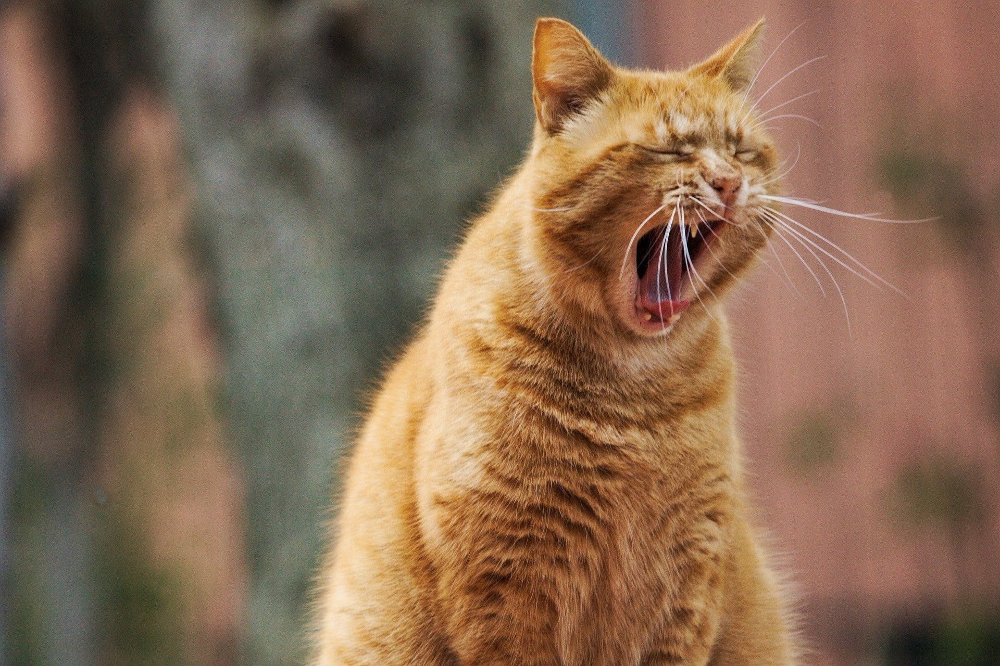
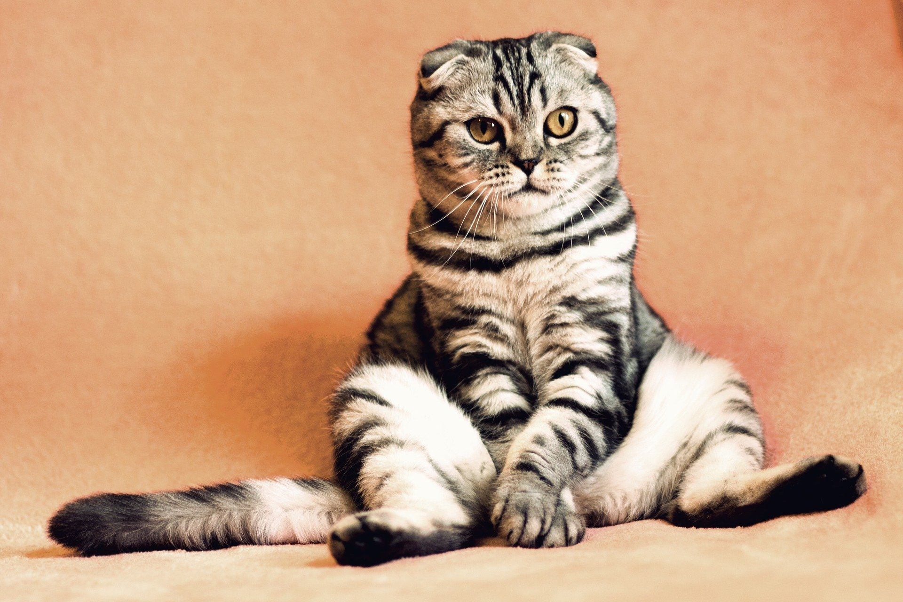
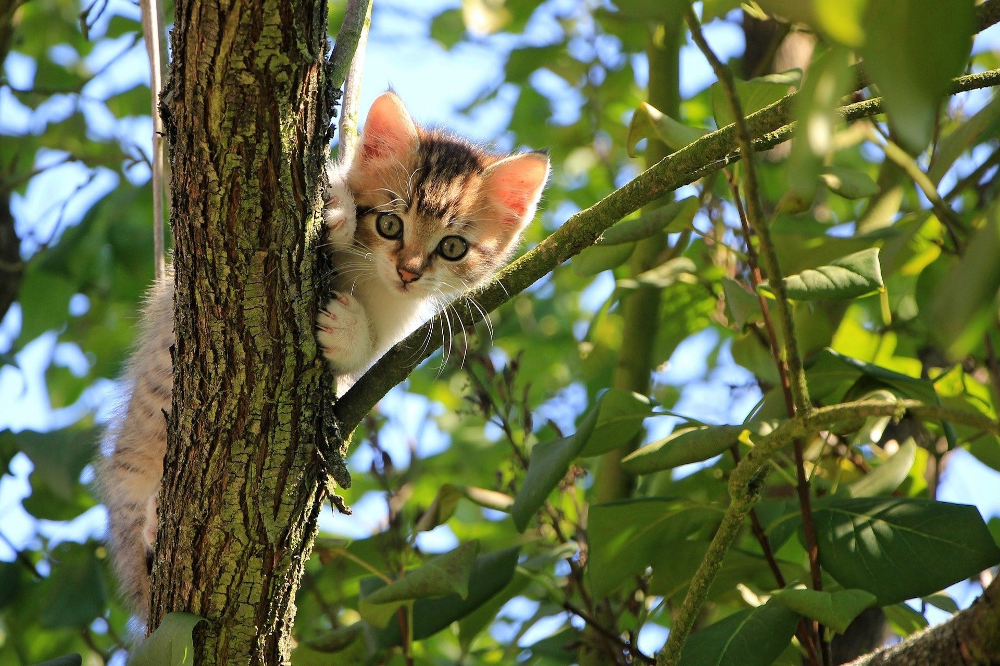

Főoldal
Regisztráció
Macska kereső
Örökbefogadás
Rólunk
Üdvözöllek a menhely oldalán!
Célunk, hogy minden magárahagyott macskek szerető otthonra és gazdára találjon.
Légy te is örökbefogadó!
Jelenleg gazdit kereső cicusaink:
  